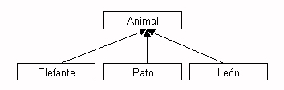
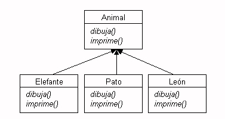

Con la herencia podemos definir una clase a partir de otra que ya exista, de forma que la nueva clase tendrá todas las variables y métodos de la clase a partir de la que se crea, más las variables y métodos nuevos que necesite. A la clase base a partir de la cual se crea la nueva clase se le llama superclase. A las clases hijas se les llama subclases.

Por ejemplo, tenemos una clase genérica Animal, y heredamos de ella para formar clases más específicas, como Pato , Elefante, o León. Si tenemos por ejemplo el método dibuja(Animal a), podremos pasarle a este método como parámetro tanto un Animal como un Pato, Elefante, etc. Esto se conoce como polimorfismo.
Las flechas hacia arriba indican una relación ES-UN:
class Pato extends Animal
public class MiClase {
int i;
public MiClase (int i) {
this.i = i; // i de la clase = parametro i
}
}
public class MiNuevaClase extends MiClase {
public void Suma_a_i (int j) {
i = i + (j / 2);
super.Suma_a_i (j);
}
}
Mediante las clases abstractas y los interfaces podemos definir
el esqueleto de una familia de clases, de forma que los subtipos de la clase
abstracta o la clase que implemente la interfaz implementen ese esqueleto para
dicho subtipo concreto. Por ejemplo, podemos definir en la clase Animal
el método dibuja() y el método imprime(),
y que Animal sea una clase abstracta o un interfaz.
Usa una clase abstracta cuando quieras definir una plantilla para para un grupo de subclases, y tengas algún código de implementación que todas las clases puedan usar. Haz la clase abstracta cuando quieras garantizar que nadie va a hacer objetos de esa clase.

Vemos la diferencia entre clase, clase abstracta e interfaz con este esquema:
Animal tendríamos que
implementar los métodos dibuja() e imprime().
Las clases hijas no tendrían por qué implementar los métodos,
a no ser que quieran adaptarlos a sus propias necesidades.La especificación en Java es como sigue.
Si queremos definir una clase (por ejemplo, Animal), como clase
abstracta y otra clase (por ejemplo, Pato) que hereda de esta clase,
debemos declararlo así:
public abstract class Animal |
public class Pato extends Animal |
Si en lugar de definir Animal como clase abstracta, lo definimos
como interfaz, debemos declarar que la clase Pato
implementa la interfaz, y debemos escribir el código
de esa implementación en la clase Pato:
public interface Animal |
public class Pato implements Animal |
La diferencia fundamental es que la clase Pato puede implementar
más de un interfaz, mientras que sólo es posible heredar de una
clase padre (en Java no existe la herencia múltiple):
public class Pato implements Animal, Volador
{
void dibujar() { codigo; } // viene de la interfaz Animal
void imprimir() { codigo; } // viene de la interfaz Animal
void vuela() { codigo; } // viene de la interfaz Volador
}
Considera la siguiente clase ObjetoGeometrico
package sesion3;
public class ObjetoGeometrico {
double xMin, yMin;
public ObjetoGeometrico(double xMin, double yMin){
this.xMin = xMin;
this.yMin = yMin;
}
public Punto puntoInicial() {
return new Punto(xMin, yMin);
}
}
Estamos definiendo un ObjetoGeometrico como algo que
contiene una coordenada x (la coordenada x más
pequeña del objeto geométrico) y una coordenada y (la
coordenada y más pequeña del objeto geométrico). Esta es una
característica común de todos los objetos geométricos.
La clase tiene el método puntoInicial() que devuelve
un objeto Punto creado a partir de las coordenadas
mínimas x e y del objeto geométrico.
Vamos a comenzar con el ejercicio.
Copia todas las clases geométricas
(Punto, Segmento, Circulo
y Rectangulo) del paquete sesion2
al sesion3. Crea en este paquete la
clase ObjetoGeometrico anterior. Haz que todas las
clases geométricas sean subclases de ella. Verás que aparecen
errores en los constructores de las clases
geométricas. Corrígelos.
Un truco de Eclipse muy útil: cuando Eclipse detecta un error aparece un indicador rojo en el editor a la izquierda de la línea donde se ha producido el error. Si posicionas el ratón sobre el indicador rojo aparece un mensaje indicando cuál es el error. Más aún: si en el indicador de error hay un pequeño icono con una bombilla es porque Eclipse cree que puede corregir el error. Haz un click (¡sólo uno!) en la bombilla y Eclipse te ofrecerá más de una opción para solucionar el error. Haz un doble click en la que creas más oportuno (normalmente la primera es la correcta) y Eclipse corregirá el error. Así de sencillo.
Copia la clase TestGeom del
paquete sesion2 al sesion3. Añade en
esta clase algunas sentencias para probar los cambios que acabas
de hacer y responde las siguientes preguntas en el
fichero respuestas.txt (nuevo fichero en el paquete
correspondiente a la sesión actual), después de haber hecho las
pruebas oportunas:
ObjetoGeometrico?ObjetoGeometrico? ¿Cómo lo has comprobado?Añade a la clase ObjetoGeometrico el siguiente método abstracto
public abstract double area();
Responde en respuestas.txt:
ObjetoGeometrico no tenga errores?ObjetoGeometrico?
Modifica todas las subclases de ObjetoGeometrico
para corregir el error.
Añade a la clase ObjetoGeometrico el método
abstracto abstract Rectangulo limites(); que devuelve
el rectángulo que limita (de forma estricta) al objeto.
Prueba el nuevo método con alguna prueba en la
clase TestGeom.
Añade e implementa en la clase ObjetoGeometrico el
método siguiente
public boolean posibleInterseccion(ObjetoGeometrico objGeom2) {
// añadir aquí la implementación
}
Este método debe devolver true cuando intersectan
los rectángulos límites de los objetos geométricos y false en otro
caso.
Prueba el método en la clase de pruebas.
Por último, escribe en la clase TestGeom un
método que haga la siguiente prueba: crear algunos objetos
geométricos, guardarlos todos en un array (el mismo array para
todos) y recorrer el array imprimiendo por la salida estándar el
tipo de objeto geometrico y su área:
El objeto 1 es un circulo de área 3.453245 El objeto 2 es un segmento de área 0.0 El objeto 3 es un punto de área 0.0 ...
Haz que el método principal de TestGeom termine
llamando a esta prueba.
Define e implementa un ejemplo de jerarquía de
clases. Define una clase ejecutable Test que realice
unas pruebas para comprobar que el ejemplo funciona
correctamente.
En este ejercicio vamos a continuar con el ejemplo de las figuras
geométricas, definiendo las interfaces Dibujable
y Medible.
Vamos a empezar por crear una interfaz en Eclipse. Pincha en el
paquete sesion3 y escoge la opción New >
Interface. Escribe Dibujable como nombre de
la interfaz.
Escribe el siguiente código:
package sesion3;
public interface Dibujable {
public void draw();
}
Fíjate que una interfaz define un conjunto de métodos pero no
proporciona la implementación. La implementación debe estar en la
clase que implementa la interfaz. De esta forma, cualquier objeto
de una clase que implementa la interfaz Dibujable va
a poder responder al método draw().
Ahora modifica las
clases Segmento, Circulo
y Rectangulo para que implementen la
interfaz Dibujable. Puedes poner como implementación
de los métodos draw() que se escriba un mensaje en la
salida estándar.
Añade a la clase TestGeom el
método testInterfazDraw() en el que se pruebe la
interfaz. Llama a ese método en el último paso de la ejecución
de TestGeom.
Vamos a complicar un poco el ejemplo. Supongamos la
interfaz Medible definida de la siguiente forma:
package sesion3;
public interface Medible {
static final double A_CENTIMETROS = 1.0;
static final double A_PUNTOS = 2.0;
static final double A_PULGADAS = 3.0;
public double tamaño();
}
Uno de los objetivos de este ejemplo es comprobar que es posible definir constantes en las interfaces. En el caso anterior, estamos definiendo tres constantes que representan factores de conversión para convertir las unidades en las que están definidas las figuras geométricas (las que definen sus coordenadas x e y y su área) en distintas unidades métricas.
Crea la interfaz Medible en el paquete actual. Y
ahora declara que la clase ObjetoGeometrico
implementa la interfaz.
¿En qué clases aparecen errores? ¿Por qué piensas que aparecen
errores en esas clases? (contesta en el ya famoso
fichero respuestas.txt).
Y ahora, para terminar, un reto: ¿cómo puedes
arreglar todos los errores modificando una única
clase?. Implementa la función tamaño() de forma
que se devuelva el área de la figura pasada a
centímetros. Comprueba que todo funciona bien haciendo un test en
el fichero TestGeom y llamándolo desde el método
principal.
Por último, explica en el fichero respuestas.txt
cómo piensas que está funcionando lo que acabas de implementar
(explícalo como si se lo contaras a alguien que no sabe nada de
interfaces ni de subclases).
Un elemento (método, variable de clase o variable de instancia) de una
clase tiene asociado unas condiciones de acceso según el modificador
de acceso que definamos en el mismo. El modificador de acceso define desde qué
clases se va a poder acceder al elemento. Así, por ejemplo, un método
con modificador de acceso public permite que desde cualquier
otra clase se realice una llamada al mismo.
En Java existen cuatro posibles niveles de acceso: private, vacío
(cuando no declaramos nada), protected, public. Estos
cuatro niveles tienen la siguiente política de acceso:
private: no se permite
el acceso al elemento, ni siquiera para las subclases. Sólo se puede acceder al elemento desde
la misma clase. Si, por ejemplo, declaramos un método A
de una superclase Super como private, ese método A no es heredado por
las subclases de Super.sesion2 no tiene modificador de
acceso (tiene un acceso por defecto), cualquier clase de este paquete
va a poder acceder a su valor.protected: puede ser que una subclase no esté
en el mismo paquete que la superclase. Si un elemento tiene el modificador
protected, se puede acceder a él desde el mismo paquete y desde
cualquier subclase, aunque la subclase no esté en el mismo paquete.public: un elemento public es accesible
desde cualquier otra clase sin ninguna restricción.Vamos a con un pequeño ejercicio para comprobar los modificadores de acceso de Java
Supongamos la siguiente clase en el paquete sesion3
package sesion3;
public class Acceso {
public int valorPublico;
int valorDefecto;
protected int valorProtected;
private int valorPrivate;
}
y ahora supongamos las dos siguientes clases que van a comprobar el acceso a los campos de Acceso:
package sesion3;
public class TestAcceso{
public void testeador() {
int i;
Acceso acceso = new Acceso();
i = acceso.valorPrivado;
i = acceso.valorDefecto;
i = acceso.valorProtected;
i = acceso.valorPublico;
}
}
package sesion3;
public class TestAccesoSubclase extends Acceso{
public void testeador() {
int i;
i = this.valorPrivado;
i = this.valorDefecto;
i = this.valorProtected;
i = this.valorPublico;
}
}
La primera clase es una clase normal que está en el mismo paquete y la segunda es una subclase de Acceso. Contesta a las siguientes preguntas en el fichero respuestas.txt:
TestAcceso hay
un error?TestAccesoSubclase
hay un error?pruebaAcceso (créalo antes), modificando la
instrucción package y añadiendo el import de la
clase sesion3.Acceso:
package pruebaAcceso; import sesion3.Acceso;
¿Qué ha cambiado ahora? ¿Qué componentes son accesibles?